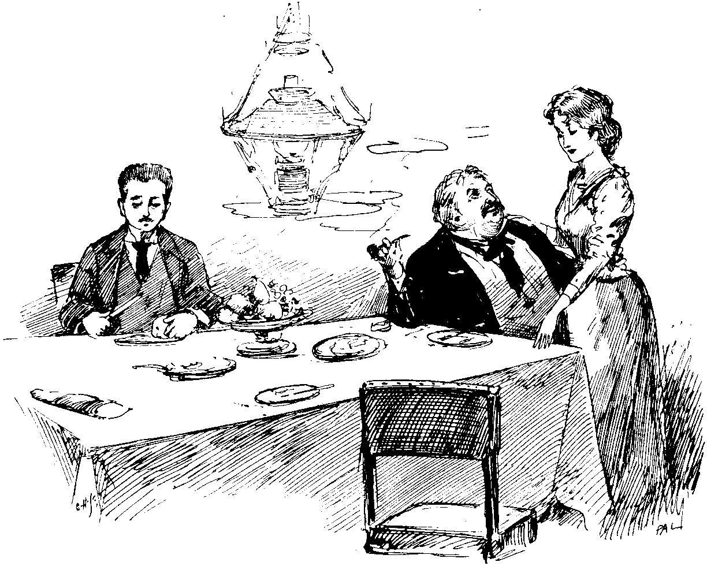

The Helmet.
From the French by Ferdinand Beissier.
{kind=link}
"But, uncle—I love my cousin!"
"Get out!"
"Give her to me."
"Don't bother me!"
"It will be my death!"
"Nonsense! you'll console yourself with some other girl."
"Pray—"
My uncle, whose back had been towards me, whirled round, his face red to bursting, and brought his closed fist down upon the counter with a heavy thump.
"Never!" he cried; "never: Do you hear what I say?"
And as I looked at him beseechingly and with joined hands, he went on:—
"A pretty husband you look like!—without a sou, and dreaming of going into housekeeping! A nice mess I should make of it, by giving you my daughter! It's no use your insisting. You know that when I have said 'No,' nothing under the sun can make me say 'Yes'!"
I ceased to make any further appeal. I knew my uncle—about as headstrong an old fellow as could be found in a day's search. I contented myself with giving vent to a deep sigh, and then went on with the furbishing of a big, double-handed sword, rusty from point to hilt.
This memorable conversation took place, in fact, in the shop of my maternal uncle, a well-known dealer in antiquities and objets d'art, No. 53, Rue des Claquettes, at the sign of the "Maltese Cross"—a perfect museum of curiosities.
The walls were hung with Marseilles and old Rouen china, facing ancient cuirasses, sabres, and muskets, and picture frames; below these were ranged old cabinets, coffers of all sorts, and statues of saints, one-armed or one-legged for the most part and dilapidated as to their gilding; then, here and there, in glass cases, hermetically closed and locked, there were knick-knacks in infinite variety—lachrymatories, tiny urns, rings, precious stones, fragments of marble, bracelets, crosses, necklaces, medals, and miniature ivory statuettes, the yellow tints of which, in the sun, took momentarily a flesh-like transparency.
Time out of mind the shop had belonged to the Cornuberts. It passed regularly from father to son, and my uncle—his neighbours said—could not but be the possessor of a nice little fortune. Held in esteem by all, a Municipal Councillor, impressed by the importance and gravity of his office, short, fat, highly choleric and headstrong, but at bottom not in the least degree an unkind sort of man—such was my uncle Cornubert, my only living male relative, who, as soon as I left school, had elevated me to the dignity of chief and only clerk and shopman of the "Maltese Cross."
But my uncle was not only a dealer in antiquities and a Municipal Councillor, he was yet more, and above all, the father of my cousin Rose, with whom I was naturally in love.
To come back to the point at which I digressed.
Without paying any attention to the sighs which exhaled from my bosom while scouring the rust from my long, two-handed sword, my uncle, magnifying glass in hand, was engaged in the examination of a lot of medals which he had purchased that morning. Suddenly he raised his head; five o'clock was striking.
"The Council!" he cried.
When my uncle pronounced that august word, it made a mouthful; for a pin, he would have saluted it bare-headed. But, this time, after a moment's consideration, he tapped his forehead and added, in a tone of supreme relief:—
"No, the sitting does not take place before to-morrow—and I am forgetting that I have to go to the railway station to get the consignment of which I was advised this morning."
Rising from his seat, and laying down his glass, he called out:—
"Rose, give me my cane and hat!"
Then, turning towards me, he added, in a lowered tone and speaking very quickly:—
"As to you—don't forget our conversation. If you think you can make me say 'yes,' try!—but I don't think you'll succeed. Meanwhile, not a word to Rose, or, by Saint Barthélemy, my patron of happy memory, I'll instantly kick you out of doors!"
{kind=link}
At that moment Rose appeared with my uncle's cane and hat, which she handed to him. He kissed her on the forehead; then, giving me a last but eloquent look, hurried from the shop.
I went on scouring my double-handed sword. Rose came quietly towards me.
"What is the matter with my father?" she asked; "he seems to be angry with you."
I looked at her—her eyes were so black, her look so kind, her mouth so rosy, and her teeth so white that I told her all—my love, my suit to her father, and his rough refusal. I could not help it—after all, it was his fault! He was not there: I determined to brave his anger. Besides, there is nobody like timid persons for displaying courage under certain circumstances.
My cousin said nothing; she only held down her eyes—while her cheeks were as red as those of cherries in May.
I checked myself.
"Are you angry with me?" I asked, tremblingly. "Are you angry with me, Rose?"
She held out to me her hand. On that, my heart seething with audacity, my head on fire, I cried:—
"Rose—I swear it! I will be your husband!" And as she shook her head and looked at me sadly, I added: "Oh! I well know that my uncle is self-willed, but I will be more self-willed still; and, since he must be forced to say 'yes,' I will force him to say it!"
"But how?" asked Rose.
Ah! how? That was exactly the difficulty. But, no matter; I would find a way to surmount it!
At that moment a heavy step resounded in the street. Instinctively we moved away from each other; I returned to my double-handed sword, and Rose, to keep herself in countenance, set to dusting, with a corner of her apron, a little statuette in its faded red velvet case.
My uncle entered. Surprised at finding us together, he stopped short and looked sharply at us, from one to the other.
We each of us went on rubbing without raising our heads.
"Here, take this," said my uncle, handing me a bulky parcel from under his arm. "A splendid purchase, you'll see."
The subject did not interest me in the least.
I opened the parcel, and from the enveloping paper emerged a steel helmet—but not an ordinary helmet, oh, no!—a superb, a monumental morion, with gorget and pointed visor of strange form. The visor was raised, and I tried to discover what prevented it from being lowered.
"It will not go down—the hinges have got out of order," said my uncle; "but it's a superb piece, and, when it has been thoroughly cleaned and touched up, will look well—that shall be your to-morrow's job."
"Very good, uncle," I murmured, not daring to raise my eyes to his.
That night, on reaching my room, I at once went to bed. I was eager to be alone and able to think at my ease. Night brings counsel, it is said; and I had great need that the proverb should prove true. But, after lying awake for an hour without receiving any assistance, I fell off to sleep, and, till next morning, did nothing but dream the oddest dreams. I saw Rose on her way to church in a strange bridal costume, a 14th-century cap, three feet high, on her head, but looking prettier than ever; then suddenly the scene changed to moonlight, in which innumerable helmets and pieces of old china were dancing a wild farandola, while my uncle, clad in complete armour and with a formidable halberd in his hand, conducted the bewildering whirl.
"MY UNCLE SAT SMOKING HIS PIPE AND WATCHING ME."
{kind=link}
The next day—ah, the next day!—I was no nearer. In vain, with clenched teeth, I scoured the immense helmet brought by my uncle the previous evening—scoured it with such fury as almost to break the iron; not an idea came to me. The helmet shone like a sun: my uncle sat smoking his pipe and watching me; but I could think of nothing, of no way of forcing him to give me his daughter.
At three o'clock Rose went into the country, whence she was not to return until dinner-time, in the evening. On the threshold she could only make a sign to me with her hand; my uncle had not left us alone for a single instant. He was not easy in his mind; I could see that by his face. No doubt he had not forgotten our conversation of the previous evening.
I went on rubbing at my helmet.
"You have made it quite bright enough—put it down," said my uncle.
I put it down. The storm was gathering: I could not do better than allow it to blow over.
But suddenly, as if overtaken by a strange fancy, my uncle took up the enormous morion and turned and examined it on all sides.
"A handsome piece of armour, there is no doubt about it; but it must have weighed pretty heavily on its wearer's shoulders," he muttered; and, urged by I know not what demon, he clapped it on his head and latched the gorget-piece about his neck.
Struck almost speechless, I watched what he was doing—thinking only how ugly he looked.
Suddenly there was a sharp sound—as if a spring had snapped—and—crack!—down fell the visor; and there was my uncle, with his head in an iron cage, gesticulating and swearing like a pagan!
I could contain myself no longer, and burst into a roar of laughter; for my uncle, stumpy, fat, and rubicund, presented an irresistibly comic appearance.
{kind=link}
Threateningly, he came towards me.
"The hinges!—the hinges, fool!" he yelled.
I could not see his face, but I felt that it was red to bursting.
"When you have done laughing, idiot!" he cried.
But the helmet swayed so oddly on his shoulders, his voice came from out it in such strange tones, that the more he gesticulated, the more he yelled and threatened me, the louder I laughed.
At that moment the clock of the Hôtel-de-Ville, striking five, was heard.
"The Municipal Council!" murmured my uncle, in a stifled voice. "Quick! help me off with this beast of a machine! We'll settle our business afterwards!"
But, suddenly likewise, an idea—a wild, extraordinary idea—came into my head; but then, whoever is madder than a lover? Besides, I had no choice of means.
"No!" I replied.
My uncle fell back two paces in terror—and again the enormous helmet wobbled on his shoulders.
"No," I repeated, firmly, "I'll not help you out, unless you give me the hand of my cousin Rose!"
From the depths of the strangely elongated visor came, not an angry exclamation, but a veritable roar. I had "done it!"—I had burned my ships!
"If you do not consent to do what I ask of you," I added, "not only will I not help you off with your helmet, but I will call in all your neighbours, and then go and find the Municipal Council!"
"You'll end your days on the scaffold!" cried my uncle.
"The hand of Rose!" I repeated. "You told me that it would only be by force that you would be made to say 'yes'—say it, or I will call in the neighbours!"
The clock was still striking; my uncle raised his arms as if to curse me.
"Decide at once," I cried, "somebody is coming!"
"Well, then—yes!" murmured my uncle. "But make haste!"
"On your word of honour?"
"On my word of honour!"
The visor gave way, the gorget-piece also, and my uncle's head issued from durance, red as a poppy.
Just in time. The chemist at the corner, a colleague in the Municipal Council, entered the shop.
"Are you coming?" he asked; "they will be beginning the business without us."
"I'm coming," replied my uncle.
And without looking at me, he took up his hat and cane and hurried out.
The next moment all my hopes had vanished. My uncle would surely not forgive me.
At dinner-time I took my place at table on his right hand in low spirits, ate little, and said nothing.
"It will come with the dessert," I thought.
Rose looked at me, and I avoided meeting her eyes. As I had expected, the dessert over, my uncle lit his pipe, raised his head, and then—
"Rose—come here!"
Rose went to him.
"Do you know what that fellow there asked me to do, yesterday?"
I trembled like a leaf, and Rose did the same.

"DO YOU LOVE HIM?"
{kind=link}
"To give him your hand," he added. "Do you love him?"
Rose cast down her eyes.
"Very well," continued my uncle; "on this side, the case is complete. Come here, you."
I approached him.
"Here I am, uncle," and, in a whisper. I added quickly: "Forgive me!"
He burst into a hearty laugh.
"Marry her, then, donkey—since you love her, and I give her to you!"
"Ah!—uncle!"
"Ah!—dear papa!"
And Rose and I threw ourselves into his arms.
"Very good! very good!" he cried, wiping his eyes. "Be happy, that's all I ask."
And, in turn, he whispered in my ear:—
"I should have given her to you all the same, you big goose; but—keep the story of the helmet between us two!"
I give you my word that I have never told it but to Rose, my dear little wife. And, if ever you pass along the Rue des Claquettes, No. 53, at the place of honour in the old shop, I'll show you my uncle's helmet, which we would never sell.